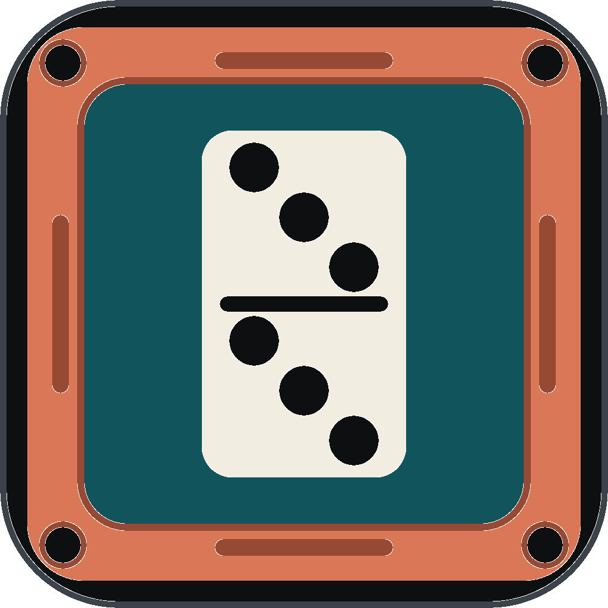
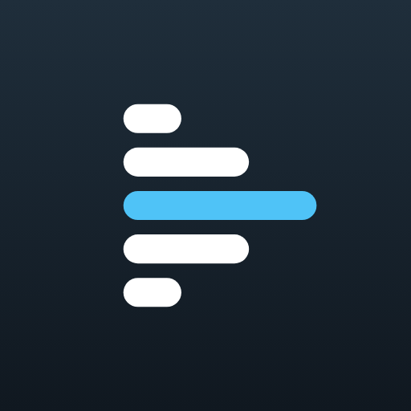

Aplicaciones

Dominada
El anotador de dominó: parejas, manos, tranques y premios. Reglas puertorriqueñas de entrada, y perfiles que puedes cambiar si tu mesa juega distinto.

LineupMux
Tu propia alineación de canales con cualquier transmisión en vivo: sintonizadores, listas IPTV, radio por internet y cámaras, con guía de programación, vista como televisión.